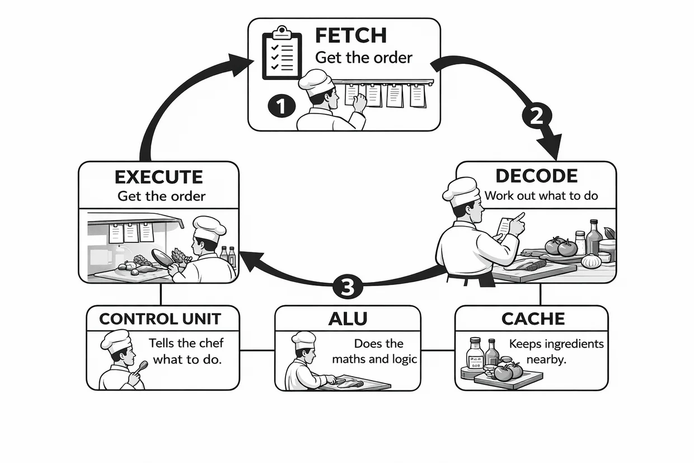
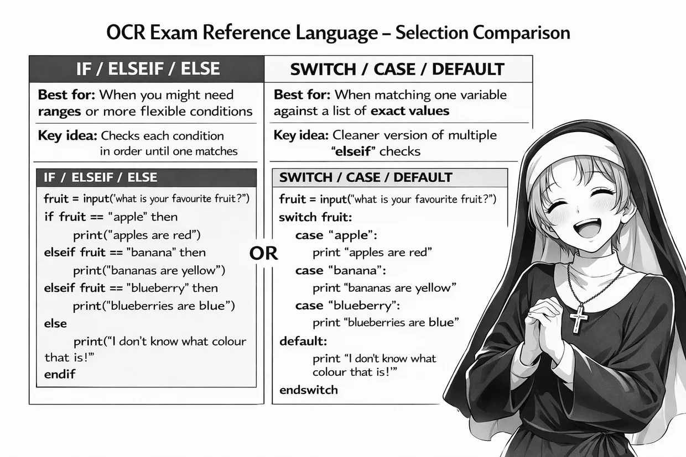

LESSON 113 · DO NOW4 min
Do Now
Four questions · Silent working · Mini-whiteboards
1 · LAST LESSON · L112
Merge the two sorted lists [1, 5] and [2, 4] into ascending order.
2 · EARLIER LEARNING · 1.1
State the purpose of the ALU within the CPU.
3 · EARLIER LEARNING · 1.2
Convert denary 13 into 8-bit binary.
4 · HIGH CHALLENGE · 1.2
An image is 20 × 10 pixels at 8 bits per pixel. Calculate the uncompressed pixel-data size in bytes, and explain why the file could be larger.
DO NOW · ANSWERS2 min
Do Now · Check
1 · LAST LESSON · L112
[1, 2, 4, 5]
2 · EARLIER LEARNING · 1.1
The ALU carries out arithmetic and logical operations.
3 · EARLIER LEARNING · 1.2
00001101
4 · HIGH CHALLENGE · 1.2
20 × 10 × 8 = 1,600 bits ÷ 8 = 200 bytes. A file may also contain metadata or headers.
LESSON 113 · OBJECTIVES2 min
Two papers. Two A3 mind maps.
Build each mind map around the OCR J277 specification points.
Paper 1 · 1.1–1.6
A3 landscape · Computer systems
Paper 2 · 2.1–2.5
A3 landscape · Algorithms and programming
Add key terms, examples and connections as we revise.
J277/01 · START3 min
Revision across both papers
Two A3 maps. Eleven specification branches. Your own explanations.
I Do Specification overview
- Paper 1: 1.1–1.6 · Computer systems
- Paper 2: 2.1–2.5 · Computational thinking, algorithms and programming
- Build each branch from memory, examples and connections—not copied paragraphs.
We Do Mini-whiteboards
01
What is the difference between a definition and an explanation?
A definition identifies what something is; an explanation includes how or why.
02
What makes a revision diagram useful after today?
Accurate, linked, concise ideas that you can use to retrieve knowledge without the booklet.
You Do A3 revision map
Paper 1 · START branch
Begin your Paper 1 map. Use the six specification branches as headings.
KeywordsConnectionsOne small example
Your own layout and explanations. No completed map to copy.
J277/01 · 1.15 min
Systems architecture
CPU components · Fetch–Decode–Execute · registers
I Do Paper 1 · 1.1
- The CU decodes and coordinates; the ALU performs arithmetic and logic; cache keeps frequently used data and instructions nearby.
- MAR holds an address; MDR holds data or an instruction; PC holds the next instruction address; accumulator holds calculation results.
| Register | Booklet memory aid | Purpose |
|---|
| MAR | Shelf number | Address of memory location |
| MDR | Ingredient | Data or instruction being transferred |
| Program Counter | Bookmark | Address of next instruction |
| Accumulator | Mixing bowl | Result of ALU calculation |

The chef and the Fetch–Decode–Execute cycle · original revision booklet MAR, MDR, PC and accumulator: the kitchen analogy · original revision booklet
MAR, MDR, PC and accumulator: the kitchen analogy · original revision booklet We Do Mini-whiteboards
01
Which register stores the address of the next instruction?
Program Counter (PC).
02
A CPU accesses location 360. Which register holds 360?
MAR: it holds the memory address.
03
What is the difference between an ALU and a control unit?
The ALU calculates and performs logic; the CU decodes instructions and coordinates operations.
You Do A3 revision map
Paper 1 · 1.1 branch
Develop your 1.1 branch. Capture a useful CPU diagram and the distinction between data and addresses.
KeywordsConnectionsOne small example
Your own layout and explanations. No completed map to copy.
J277/01 · 1.25 min
Memory and storage · units and number bases
KB, MB, GB, TB · denary ↔ binary ↔ hex
I Do Paper 1 · 1.2.3–1.2.4
- For the conversion questions here, use 1,000 between adjacent decimal storage units.
- Eight binary place values: 128 64 32 16 8 4 2 1. Four bits make one hexadecimal digit.
- Denary, binary and hexadecimal represent the same value in different number bases.
| Denary | 8-bit binary | Hex |
|---|
| 38 | 00100110 | 26 |
| 78 | 01001110 | 4E |
| 156 | 10011100 | 9C |
We Do Mini-whiteboards
01
Express 3 TB in MB using decimal units.
3,000,000 MB.
02
Write denary 45 as an 8-bit binary number.
00101101.
03
Convert hexadecimal 3A into denary.
58 (3×16 + 10).
You Do A3 revision map
Paper 1 · 1.2 branch
Build your 1.2 branch with a compact conversion method and one worked example.
KeywordsConnectionsOne small example
Your own layout and explanations. No completed map to copy.
J277/01 · 1.25 min
Binary arithmetic and shifts
Carry columns · shifts and place value
I Do Paper 1 · 1.2.4
- Add binary one column at a time: 1 + 1 = 10₂, so write 0 and carry 1.
- A logical left shift multiplies an unsigned value by powers of two; a right shift divides by powers of two, discarding shifted-off bits.
- An 8-bit register has a fixed width: bits shifted off the end are lost.
 Left and right binary shifts · from the revision guide · original revision booklet
Left and right binary shifts · from the revision guide · original revision booklet We Do Mini-whiteboards
01
Add 00101101 and 00000111 in binary.
00110100 (45 + 7 = 52).
02
Shift 01011000 right by two positions.
00010110.
03
Which shift multiplies a binary value by 16, assuming no overflow?
A 4-place logical left shift.
You Do A3 revision map
Paper 1 · 1.2 branch
Add one example of addition or a shift to 1.2. Show why the method works.
KeywordsConnectionsOne small example
Your own layout and explanations. No completed map to copy.
J277/01 · 1.23 min
Character sets
ASCII · Unicode · representing text
I Do Paper 1 · 1.2.4
- A character set maps characters to binary codes.
- ASCII represents a limited set of characters; Unicode supports a far wider range of writing systems and symbols.
- The encoded size depends on the actual encoding used: don’t assume every Unicode character always takes the same number of bytes.
| Character | ASCII denary | 8-bit representation |
|---|
| A | 65 | 01000001 |
| B | 66 | 01000010 |
| C | 67 | 01000011 |
We Do Mini-whiteboards
01
If A is denary 65, what is the code for D in consecutive ASCII codes?
68 (binary 01000100).
02
Why is Unicode useful in a multilingual application?
It supports many more characters and scripts than ASCII.
You Do A3 revision map
Paper 1 · 1.2 branch
Link character sets to binary representation in the 1.2 branch.
KeywordsConnectionsOne small example
Your own layout and explanations. No completed map to copy.
J277/01 · 1.35 min
Networks and topologies
LAN vs WAN · star vs mesh
I Do Paper 1 · 1.3.1
- A LAN operates within a local area; a WAN connects networks across a wider geographical area.
- Star: connections through a central switch. Mesh: multiple connections create alternative routes.
- For an evaluation, link a benefit and a drawback to the actual network.
| Topology | Advantage | Disadvantage |
|---|
| Star | Simple to manage | Switch is a central point of failure |
| Mesh | Alternative routes | More links and greater expense |
 Star network diagram from the revision guide · original revision booklet
Star network diagram from the revision guide · original revision booklet Mesh topology with alternative paths · original revision booklet
Mesh topology with alternative paths · original revision booklet We Do Mini-whiteboards
01
What feature makes a classroom network a LAN rather than a WAN?
It covers a small/local geographic area.
02
What can happen to star network communication if its central switch fails?
Devices connected through that switch can lose network communication.
03
Why might mesh be more resilient but more costly?
Alternative connections can carry data if one fails, but require more links and hardware.
You Do A3 revision map
Paper 1 · 1.3 branch
Develop 1.3 with a small diagram and an annotated comparison.
KeywordsConnectionsOne small example
Your own layout and explanations. No completed map to copy.
J277/01 · 1.35 min
Addressing and DNS
Valid IPv4 addresses · URL to IP address
I Do Paper 1 · 1.3.2
- An IPv4 address contains four octets separated by dots; each octet is from 0 to 255.
- DNS resolves a domain name to an IP address. A resolver may check its cache and query DNS servers to find the record.
- A router forwards traffic between networks; a switch joins devices within a LAN.
www.example.org
→
DNS lookup
→
IP address
Based on the booklet’s networking explanations
We Do Mini-whiteboards
01
Is 172.16.254.1 syntactically valid IPv4?
Yes: four octets, all between 0 and 255.
02
Why is 300.12.4.2 not a valid IPv4 address?
300 is greater than the maximum octet value 255.
03
What is the main job of DNS when you type a domain name?
Translate / resolve the name into an IP address.
You Do A3 revision map
Paper 1 · 1.3 branch
Connect domain name → DNS → IP address in your 1.3 branch.
KeywordsConnectionsOne small example
Your own layout and explanations. No completed map to copy.
J277/01 · 1.43 min
Network security
Threats · prevention · access to information
I Do Paper 1 · 1.4
- Match threats to a suitable security measure: malware, phishing, brute force attacks and unauthorised access.
- Measures include anti-malware, user access levels, strong authentication, firewalls and encryption.
- Encryption protects confidentiality of data; it does not by itself prevent every cyber attack.
 Cyber attacks: visual revision from your booklet · original revision booklet
Cyber attacks: visual revision from your booklet · original revision booklet We Do Mini-whiteboards
01
What does a firewall primarily control?
Incoming and outgoing network traffic according to rules.
02
How does encryption help if stored files are stolen?
It makes the contents unreadable without the decryption key.
You Do A3 revision map
Paper 1 · 1.4 branch
Create a short threat → prevention connection under 1.4.
KeywordsConnectionsOne small example
Your own layout and explanations. No completed map to copy.
J277/01 · 1.55 min
Systems software · operating systems
Managing memory, files, users, devices and the CPU
I Do Paper 1 · 1.5.1
- An operating system manages hardware and provides an interface for applications and users.
- Keep processor management, memory management, file management, user management and peripheral management distinct.
| OS function | Recognisable example |
|---|
| Processor management | Scheduling tasks / multitasking |
| Memory management | Allocating RAM |
| File management | Creating and renaming folders |
| User management | Accounts and permissions |
| Peripheral management | Printer drivers and connected devices |
 Operating system functions · booklet visual analogy · original revision booklet
Operating system functions · booklet visual analogy · original revision booklet We Do Mini-whiteboards
01
Which OS function allocates RAM to running applications?
Memory management.
02
Which OS function schedules CPU time for several tasks?
Processor management.
03
What OS function handles installation of a printer driver?
Peripheral management.
You Do A3 revision map
Paper 1 · 1.5 branch
Build 1.5 around operating system functions, not just the phrase “manages hardware”.
KeywordsConnectionsOne small example
Your own layout and explanations. No completed map to copy.
J277/01 · 1.54 min
Utility software
Maintenance and security tools
I Do Paper 1 · 1.5.2
- Utilities help maintain, manage or protect a computer system.
- Encryption uses an algorithm and key to transform plaintext into ciphertext.
- Other examples include backup, compression, anti-malware and disk management.
| Utility | Purpose |
|---|
| Backup | Recover lost or damaged data |
| Anti-malware | Detect and remove malicious software |
| Encryption | Protect the confidentiality of information |
| Compression | Reduce file size |
We Do Mini-whiteboards
01
Name a utility that helps recover an accidentally deleted important file.
Backup software, assuming a usable backup exists.
02
What is ciphertext?
Encrypted data that is unreadable without the correct decryption process/key.
You Do A3 revision map
Paper 1 · 1.5 branch
Link utility → purpose → effect within 1.5.
KeywordsConnectionsOne small example
Your own layout and explanations. No completed map to copy.
J277/01 · 1.66 min
Ethical and environmental impacts
Technology · issue · effect · result
I Do Paper 1 · 1.6
- The revision booklet uses TIER for extended responses: Technology, Issue, Effect, Result.
- Distinguish ethical issues (fairness, user choice, accessibility, planned obsolescence) from environmental effects (energy, extraction, e-waste, recycling).
- Evaluate different stakeholders and reach a justified judgement.
| T | Technology: identify the product/decision |
| I | Issue: identify a clear impact |
| E | Effect: explain who is affected and how |
| R | Result: reasoned judgement |
We Do Mini-whiteboards
01
Why could stopping security updates raise an ethical concern?
It may leave users exposed to risks and encourage premature replacement.
02
Give one possible environmental consequence of frequently replacing phones.
More electronic waste, raw-material extraction and manufacturing energy use.
You Do A3 revision map
Paper 1 · 1.6 branch
Use TIER as a small planning aid under 1.6. Link causes to consequences.
KeywordsConnectionsOne small example
Your own layout and explanations. No completed map to copy.
J277/01 · 1.64 min
Legislation and personal data
Legal duties · actions a real organisation must take
I Do Paper 1 · 1.6
- Data Protection Act 2018 and UK GDPR govern how personal data is processed.
- Relevant principles: collect only what is necessary; specify the purpose; maintain security and accuracy; don’t retain it unnecessarily.
- In exam-style explanations, give a specific organisation action rather than simply naming the law.
We Do Mini-whiteboards
01
A club collects membership records. State one way it can limit data collection.
Collect only details necessary for managing membership.
02
Give one step that protects the stored data.
Restrict access, use secure authentication, encrypt data as appropriate, etc.
You Do A3 revision map
Paper 1 · 1.6 branch
Complete the 1.6 branch with a law linked to an organisational action.
KeywordsConnectionsOne small example
Your own layout and explanations. No completed map to copy.
J277/01 · MAP 17 min
Paper 1 mind map · consolidate
Your own one-page revision resource for 1.1–1.6
I Do Specification overview
- Make each of the six branches useful for retrieval, not simply attractive.
- Prioritise connections, diagrams, compact examples and terminology you can explain.
- Mark a topic you will revisit without the revision booklet.
We Do Mini-whiteboards
01
Which Paper 1 branch contains DNS?
1.3 Networks, connections and protocols.
02
Which branch contains operating systems?
1.5 Systems software.
You Do A3 revision map
Paper 1 · MAP 1 branch
Consolidate all six Paper 1 branches. Use the remaining space for the links or examples that will help you revise independently.
KeywordsConnectionsOne small example
Your own layout and explanations. No completed map to copy.
J277/02 · START2 min
Paper 2 · your second A3 map
Algorithms, programming and the skills that make programs reliable
I Do Specification overview
- Start from the 2.1–2.5 specification branches.
- Capture methods and working as well as definitions.
- Keep everything concise enough to retrieve at home.
We Do Mini-whiteboards
01
What are the three main programming constructs?
Sequence, selection and iteration.
You Do A3 revision map
Paper 2 · START branch
Begin your Paper 2 map with the 2.1–2.5 branch headings.
KeywordsConnectionsOne small example
Your own layout and explanations. No completed map to copy.
J277/02 · 2.15 min
Computational thinking
Abstraction · Decomposition · Algorithmic thinking
I Do Paper 2 · 2.1.1
- The booklet’s A–D–A visual links Abstraction, Decomposition and Algorithmic thinking.
- Abstraction: keep relevant information. Decomposition: break a system into smaller problems. Algorithmic thinking: plan precise ordered steps.
| Technique | Example from your booklet |
|---|
| Abstraction | Bus app: keep stops and times, ignore seat colour |
| Decomposition | Game: controls, scoring, collisions and menu |
| Algorithmic thinking | Login: input → check → accept/reject |
 A–D–A visual memory aid in the revision booklet · original revision booklet
A–D–A visual memory aid in the revision booklet · original revision booklet We Do Mini-whiteboards
01
A game is split into scoring, controls and levels. Name the technique.
Decomposition.
02
A bus app ignores the colour of seats but stores stop times. Name the technique.
Abstraction.
03
A developer writes the exact steps for a login. Name the technique.
Algorithmic thinking.
You Do A3 revision map
Paper 2 · 2.1 branch
Create a 2.1 branch showing why A, D and A are different.
KeywordsConnectionsOne small example
Your own layout and explanations. No completed map to copy.
J277/02 · 2.16 min
Trace algorithms
Sequence · selection · iteration · state changes
I Do Paper 2 · 2.1.2
- Trace every iteration in the order the statements execute.
- For each pass, write the variable value before and after an update, then evaluate the condition.
- A post-condition loop performs its body at least once; beware of where the test sits in a flowchart.
x = 7
while x > 0
print(x)
x = x - 3
endwhile Iteration flowchart from the revision booklet · original revision booklet
Iteration flowchart from the revision booklet · original revision booklet We Do Mini-whiteboards
01
What values are printed by the displayed algorithm?
7, 4, 1.
02
How many times is the loop body executed?
Three times.
03
If x starts at 6, what values are printed?
6, 3.
You Do A3 revision map
Paper 2 · 2.1 branch
Include a miniature trace table under 2.1, showing how one variable changes.
KeywordsConnectionsOne small example
Your own layout and explanations. No completed map to copy.
J277/02 · 2.17 min
Sorting · merge sort
Divide into single items · merge sorted groups
I Do Paper 2 · 2.1.3
- Divide: repeatedly split the list into smaller groups until each contains one item.
- Merge: combine sorted groups by comparing the next item from each group.
- To show steps, include meaningful intermediate stages; the final order on its own is insufficient.
| Stage | Example |
|---|
| Start | [6, 2, 8, 1] |
| Split | [6, 2] [8, 1] |
| Single items | [6] [2] [8] [1] |
| Sorted pairs | [2, 6] [1, 8] |
| Final merge | [1, 2, 6, 8] |
 Merge sort · division and merging steps from the booklet · original revision booklet
Merge sort · division and merging steps from the booklet · original revision booklet We Do Mini-whiteboards
01
What are the first two halves of [9, 3, 7, 2]?
[9, 3] and [7, 2].
02
What sorted pairs result before the final merge?
[3, 9] and [2, 7].
03
What is the final merged list?
[2, 3, 7, 9].
You Do A3 revision map
Paper 2 · 2.1 branch
Represent the divide → merge process visually within 2.1, using your own number set.
KeywordsConnectionsOne small example
Your own layout and explanations. No completed map to copy.
J277/02 · 2.25 min
Programming constructs
Sequence · selection · iteration
I Do Paper 2 · 2.2.1
- Sequence: statements in an order. Selection: a decision selects a path. Iteration: repeats a section of code.
- Use clear conditions such as
score >= 50. A Boolean condition evaluates to True or False. - Distinguish a fixed-number
for loop from a condition-controlled while loop.
 The three programming constructs · revision booklet · original revision booklet
The three programming constructs · revision booklet · original revision booklet We Do Mini-whiteboards
01
Which construct decides whether a customer receives a discount?
Selection.
02
Which construct repeats input until a suitable value is entered?
Iteration.
03
Write a Boolean test for an age from 13 through 17 inclusive.
age >= 13 AND age <= 17
You Do A3 revision map
Paper 2 · 2.2 branch
Give 2.2 a small construct diagram or a code example that combines two constructs.
KeywordsConnectionsOne small example
Your own layout and explanations. No completed map to copy.
J277/02 · 2.25 min
Functions and parameters
Parameter in · return value out
I Do Paper 2 · 2.2.3
- Functions return a value to the caller; procedures perform a task without returning a value.
- A parameter is named in the definition; the argument is the value used when the function is called.
return is not the same as print.
function fee(quantity)
return quantity * 6
endfunction
total = fee(4) Functions and procedures · source booklet comparison · original revision booklet
Functions and procedures · source booklet comparison · original revision booklet We Do Mini-whiteboards
01
What value is stored in total in the displayed example?
24.
02
What is the parameter name in fee(quantity)?
quantity.
03
What is the difference between return and print?
return passes a value back to the caller; print displays it.
You Do A3 revision map
Paper 2 · 2.2 branch
Add one concise function example to 2.2, labelling its input and result.
KeywordsConnectionsOne small example
Your own layout and explanations. No completed map to copy.
J277/02 · 2.26 min
File handling and casting
Open · read/process · close
I Do Paper 2 · 2.2.3
- open() accesses the text file; readLine() reads a line; endOfFile() indicates when reading should stop; close() releases the file.
- Casting converts between types—e.g.
int(line) for a numeric comparison. - Understand the sequence of operations, not just the names of the commands.
f = open("scores.txt")
while NOT f.endOfFile()
line = f.readLine()
if int(line) > 20 then
print(line)
endif
endwhile
f.close() We Do Mini-whiteboards
01
Which operation obtains the next line from a text file?
readLine().
02
Why cast text using int() before comparing it with 20?
Because readLine() gives a string and numerical comparison requires a numeric type.
03
What is the final file operation?
close().
You Do A3 revision map
Paper 2 · 2.2 branch
Add a small file-processing sequence to your 2.2 branch.
KeywordsConnectionsOne small example
Your own layout and explanations. No completed map to copy.
J277/02 · 2.26 min
Selection inside iteration
Validate input · update variables · stop correctly
I Do Paper 2 · 2.2.1
- Use selection to accept or reject an input and iteration to repeat an action.
- Update a changing value, such as a stock count, so a loop can eventually stop.
- For validation, express the complete set of allowed inputs and consider boundaries.
stock = 10
while stock > 0
wanted = int(input("How many?"))
if wanted >= 1 AND wanted <= stock then
stock = stock - wanted
endif
endwhile
Programming constructs · selection and iteration from the revision guide · original revision booklet We Do Mini-whiteboards
01
With stock = 10, what happens after a valid request for 4?
stock becomes 6.
02
With stock = 6, why must a request for 8 be rejected?
It is greater than the available stock.
03
Why must stock change after a valid booking?
So it reflects the remaining capacity and can eventually reach the loop’s stopping condition.
You Do A3 revision map
Paper 2 · 2.2 branch
Connect selection, iteration and changing state in your 2.2 map.
KeywordsConnectionsOne small example
Your own layout and explanations. No completed map to copy.
J277/02 · 2.36 min
Defensive design and testing
Normal · boundary · invalid · erroneous
I Do Paper 2 · 2.3.1–2.3.2
- Validation checks that input meets specified rules; it cannot prove the input is factually correct.
- For an allowed range 10–50, the boundaries are 10 and 50.
- Use normal, boundary and invalid/erroneous data to test acceptance and rejection.
| Input for range 10–50 | Classification |
|---|
| 27 | Normal |
| 10 and 50 | Boundary (valid) |
| 51 or −1 | Invalid / erroneous |
| "hello" | Invalid / erroneous type |
 Test data categories · from the booklet · original revision booklet
Test data categories · from the booklet · original revision booklet We Do Mini-whiteboards
01
For ages 13–18 inclusive, give both valid boundary values.
13 and 18.
02
Is 19 normal, boundary or invalid for that range?
Invalid/erroneous; it is just above the upper valid boundary.
03
Does passing a validation check prove a date of birth is genuine?
No. Validation checks format/rules, not factual truth.
You Do A3 revision map
Paper 2 · 2.3 branch
Include a tiny test-data table under 2.3, with at least one boundary.
KeywordsConnectionsOne small example
Your own layout and explanations. No completed map to copy.
J277/02 · 2.44 min
Boolean logic
AND · OR · NOT in programs
I Do Paper 2 · 2.4.1
- AND requires both conditions; OR requires at least one; NOT reverses a Boolean value.
- Compound conditions must reflect the exact input rules; parentheses help make intent clear.
 AND and NOT truth table from the revision booklet · original revision booklet
AND and NOT truth table from the revision booklet · original revision booklet We Do Mini-whiteboards
01
When is A AND B true?
Only when A and B are both true.
02
Evaluate NOT (True AND False).
True.
03
Write a condition for a PIN that has four characters and is not "0000".
pin.length == 4 AND pin != "0000"
You Do A3 revision map
Paper 2 · 2.4 branch
Add a compact AND / OR / NOT example or truth-table fragment to 2.4.
KeywordsConnectionsOne small example
Your own layout and explanations. No completed map to copy.
J277/02 · 2.53 min
IDE tools
Editor · debugger · breakpoints · error diagnostics
I Do Paper 2 · 2.5.2
- An IDE combines tools for writing, running and debugging programs.
- Breakpoints pause execution; a debugger can step through code and inspect variables.
- Syntax highlighting, error diagnostics and auto-completion support editing and spotting mistakes.
 IDE tools infographic from the original revision guide · original revision booklet
IDE tools infographic from the original revision guide · original revision booklet We Do Mini-whiteboards
01
Which IDE feature pauses execution at a chosen line?
Breakpoint.
02
Which IDE feature lets you check changing values one statement at a time?
Debugger / single-step execution.
You Do A3 revision map
Paper 2 · 2.5 branch
Finish 2.5 with tools and their distinct purposes.
KeywordsConnectionsOne small example
Your own layout and explanations. No completed map to copy.
J277/02 · MAP 25 min
Complete your two A3 revision maps
A personal retrieval resource, not copied notes
I Do Specification overview
- Check the six Paper 1 and five Paper 2 specification branches.
- Improve one link or worked example on each page.
- Choose your highest-priority revision gap for the next independent session.
We Do Mini-whiteboards
01
Where does merge sort sit on Paper 2?
2.1 Algorithms.
02
Where does test-data classification sit?
2.3 Producing robust programs.
You Do A3 revision map
Paper 2 · MAP 2 branch
Finish the two maps. Circle one strong area and mark one specific gap to revisit.
KeywordsConnectionsOne small example
Your own layout and explanations. No completed map to copy.
KEY VOCABULARY2 min
Say it precisely
Use the correct vocabulary in your explanations and annotations.
MARStores the address of the memory location being accessed.
DNSLooks up the IP address associated with a domain name.
AbstractionRemoves unnecessary detail from the problem.
IterationRepeats instructions while a condition holds or for a stated range.
FunctionSubprogram which returns a value.
Boundary dataTest data at the limits of an accepted range.
EXIT TICKET2 min
Exit ticket
True or false?A binary search will work correctly on any unsorted list.
False. Binary search requires an ordered list.
Confidence check: 👍 Confident ↔ Nearly there 👎 Need another example
Circle the branch on either A3 map that needs the most work next.